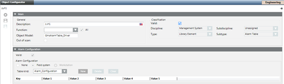

Create an Alarm Table at the Required Customization Level
Once you have an Alarm Tables block available in a library at your customization level, you can create alarm tables inside it in two ways:
- Create an empty alarm table from scratch.
- Copy an existing alarm table using Save As.
Read the appropriate procedure as needed. Skip this step if you already have an alarm table that you can work on.
Create an Empty Alarm Table
- A library with Alarm Tables block is available at your customization level.
- In System Browser, select the Alarm Tables block where you want to create the alarm table. For example, Project > System Settings > Libraries > [L4-Project] > Access > Common > Alarm Tables.
- In the Object Configurator tab, click New Alarm Table
 .
. - Enter a name and description for the alarm table.
- Click OK.
- Open the Alarm Configuration expander.
- Set the Field System option.
- From the Table kind drop-down list, select the required table structure.
- Click Save
 .
.
- An empty alarm table of the specified kind is created

Copy an Alarm Table with Save As
- A library with Alarm Tables block is available at your customization level.
- In System Browser, select the alarm table that you want to copy. For example, Project > System Settings > Libraries > [L1-Headquarter] > Access > SiPass Integrated > Alarm Tables > SiPass Alarm Table Doors.
- Click Save As
 .
. - In the Save Object As dialog box, select the Alarm Tables block where you want to save a copy of this alarm table. For example [L4-Project] > Access > SiPass Integrated > Alarm Tables.
- Enter a name and description for the new alarm table.
- Click OK.
- A copy of the alarm table is saved in the specified location.